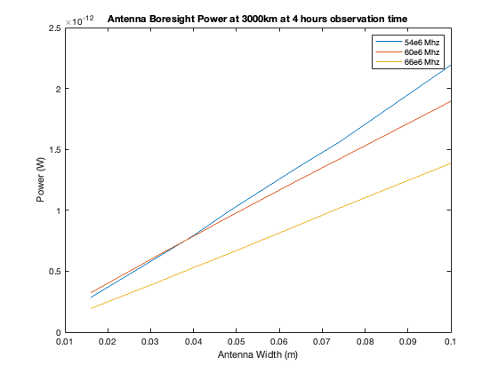

Contents
close all; clear all; clc;
JPL Mission Parameters for REASON
%REASON transmit upper and lower bound (Watts) P_t_l = 8; P_t_u = 10; %REASON boresight gain upper and lower bound (dBi) G_0_l = 9; G_0_u = 10; %REASON Side lobe gain upper and lower bound (dBi) G_ts_l = 10^(-15/20); G_ts_u = 10^(0/20); %REASON polarization loss L_pol = .7; %REASON Coherence loss L_c = .5; %REASON duty cycle d = .1; %REASON allowable observation time for calibration (s) Obs = 4*60^2; Obs_a = .5:.5:8; Obs_a_s =Obs_a*60^2; %Receive noise temperture upper and lower bound T_l = 2000; T_u = 5800; %frequency badwidth upper and lower bound f_l = 50e6; f_c = 60e6; f_u = 66e6; B = f_u-f_l; %min allowable seperation of CaliPer from Clipper R = 1000e3;
CaliPer Parameters
%effective area of CaliPer Antenna projection %%S11 Receive atenna effiency at a certain frequency T = readtable('S11V3.csv','NumHeaderLines',3);
Calulate Effective Area
Get the Antenna width and height
w_a = 2*table2array(T(:,2));
h_a = table2array(T(:,3));
length = height(w_a);
%find A_eff
A_eff = zeros(length);
for i = 1:length
A_eff(i) = w_a(i)*h_a(i);
end
% convert S11 dB for 54,60,66MHz to decimal
f_a_l = zeros(length);
f_a_c = zeros(length);
f_a_h = zeros(length);
for i = 1:height(T(:,3))
f_a_l(i) = 1-10^(table2array(T(i,4))/10);
f_a_c(i) = 1-10^(table2array(T(i,6))/10);
f_a_h(i) = 1-10^(table2array(T(i,5))/10);
end
%simulated atenna efficenty from .01 to 100%
eff = .01:0.01:1;
leneff = width(eff);
%number of atenna elements
N_elm = 1;
T_obs
T_obs = d*Obs; T_obs_a = Obs_a*d;
Universal constants
%Boltzman Constant
k = .380649e-23;
c = 3e8;
Wavelenth upper and lower bound
lambda_l = c/f_l;
lambda_u = c/f_u;
lambda_c = c/f_c;
Power received by one RF emission from REASON upper and lower bound side lobe
P_r_l_e = zeros(length,leneff);
for i = 1:length
for j = 1:leneff
P_r_l_e(i,j) = P_t_l*G_ts_l*(lambda_u)^2/(4*pi)*A_eff(i)*N_elm*(1/(4*pi*R^2))*L_pol*eff(j);
end
end
%%Signal to Noise Power Ratio for tranmission (dB)
SNR = zeros(length, leneff);
for i = 1:length
for j = 1:leneff
SNR(i,j) = 20*log((2*P_r_l_e(i,j)*T_obs*L_c*(1/(k*T_u*B))));
end
end
figure()
plot(eff,SNR)
title("SNR vs. Atenna efficiency side lobe -15dB REASON signal 3000km and 4 hour observation time")
xlabel("Antenna efficiency")
ylabel("SNR")
legend("4mm","8mm","16mm","32mm","40mm","48mm","100mm")
%%REASON Boresight power as a function of antenna diameter
for i = 1:length
P_r_l_bor(i) = P_t_l*G_0_u*(lambda_l)^2/(4*pi)*A_eff(i)*N_elm*(1/(4*pi*R^2))*L_pol*f_a_l(i);
end
for i = 1:length
P_r_u_bor(i) = P_t_l*G_0_u*(lambda_u)^2/(4*pi)*A_eff(i)*N_elm*(1/(4*pi*R^2))*L_pol*f_a_h(i);
end
for i = 1:length
P_r_c_bor(i) = P_t_l*G_0_u*(lambda_c)^2/(4*pi)*A_eff(i)*N_elm*(1/(4*pi*R^2))*L_pol*f_a_c(i);
end
figure()
plot(w_a,P_r_l_bor',w_a,P_r_c_bor',w_a,P_r_u_bor')
title("Antenna Boresight Power at 3000km at 4 hours observation time")
xlabel("Antenna Width (m)")
ylabel("Power (W)")
legend("54e6 Mhz","60e6 Mhz","66e6 Mhz")
%%SNR observation time, lower bound efficiency, width
f_a_l_len = width(f_a_l);
T_obs_a_len = width(Obs_a_s);
for i = 1:length
P_r_l_e(i) = P_t_l*G_ts_l*(lambda_l)^2/(4*pi)*A_eff(i)*N_elm*(1/(4*pi*R^2))*L_pol;
end
for i = 1:length
for j = 1:T_obs_a_len
SNR1(i,j) = 20*log((2*P_r_l_e(i)*Obs_a_s(j)*L_c*(1/(k*T_u*B))));
end
end
figure()
plot(T_obs_a,SNR1)
title("Antenna SNR vs observation time at 3000km at -15dBi REASON signal side lobe")
xlabel("Observation time (Hr)")
ylabel("SNR (dB)")
legend("4mm","8mm","16mm","32mm","40mm","48mm","100mm")
%%SNR vs. distance
R_a = 100:100:5e3;
R_a_m = R_a*1e3;
R_a_len = width(R_a);
for i = 1:length
for j = 1:R_a_len
P_r_l_e(i,j) = P_t_l*G_ts_l*(lambda_l)^2/(4*pi)*A_eff(i)*N_elm*(1/(4*pi*R_a_m(j)^2))*L_pol;
end
end
for i = 1:length
for j = 1:R_a_len
SNR1(i,j) = 20*log((2*P_r_l_e(i,j)*Obs*L_c*(1/(k*T_u*B))));
end
end
figure()
plot(R_a,SNR1)
title("Antenna SNR vs distance at at -15dBi REASON signal side lobe 4 hour observation time")
xlabel("Distance (km)")
ylabel("SNR (dB)")
legend("4mm","8mm","16mm","32mm","40mm","48mm","100mm")
 Effective Isotropic Radiation Power
%calbe loss (dB) %L_c = -5; % EIRP = 10*log(P_r_u) - L_c + 2.15 %equation variables % P_r = % G_0 = % A_eff = % % R = % % G_a = % T_obs = % k =